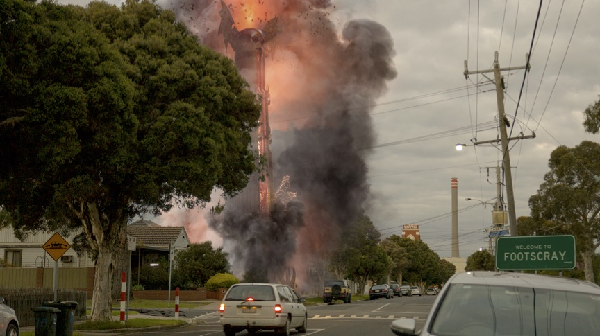
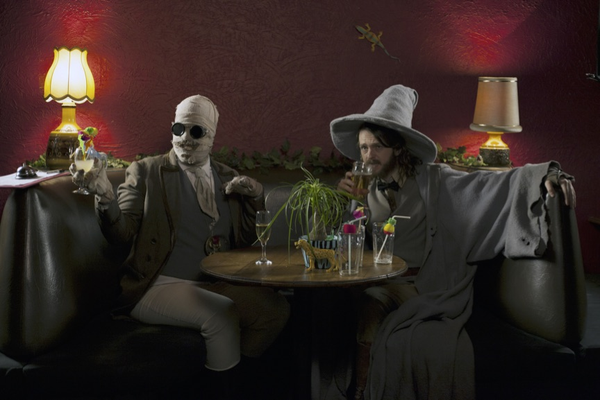
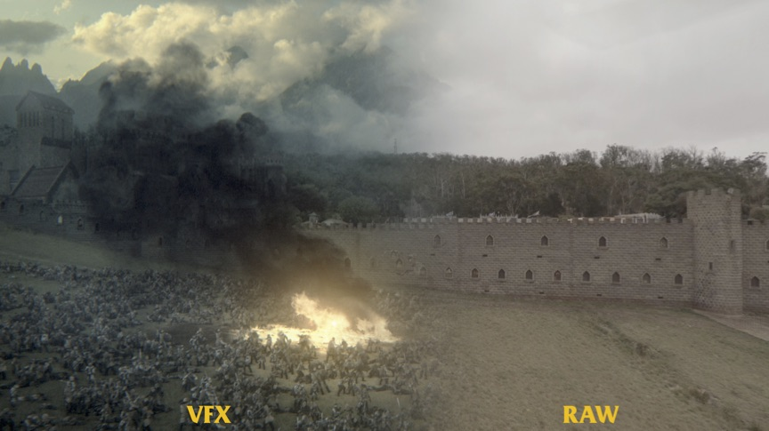
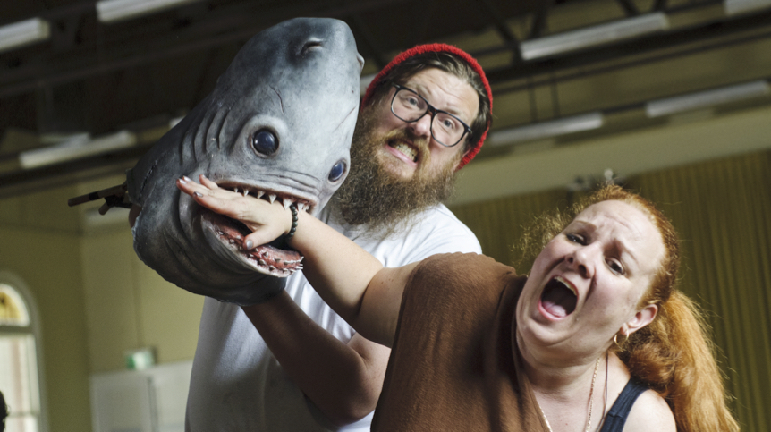
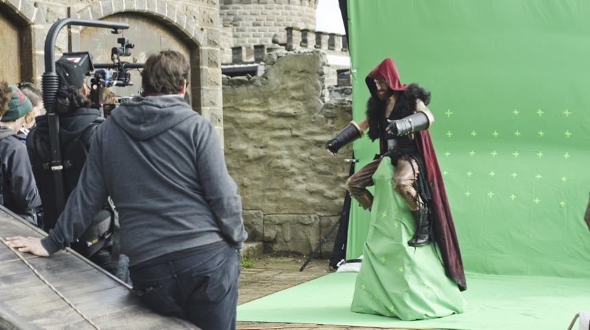
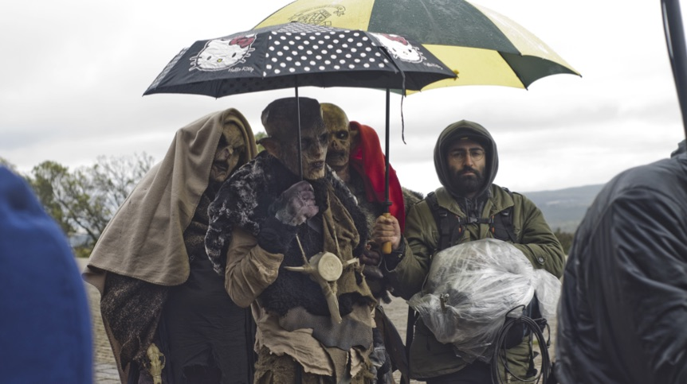
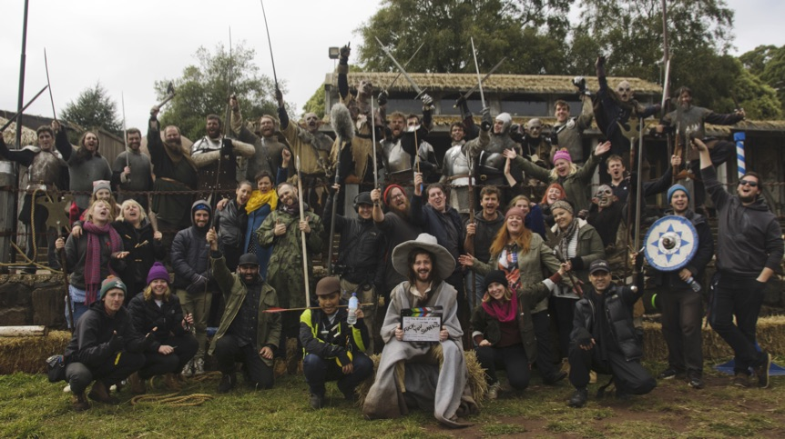

#
Directing The Wizards of Aus
I shot the very first footage for The Wizards of Aus at age nineteen with a couple of my friends acting in it. Upon reviewing said footage, I thought ‘Oh, this is kinda shitty,’ and continued living my life.
However, I never could quite shake the idea out of my head. The sheer lunacy of the concept rattled around in my brain, and then five years later I found myself pitching it to an alarmingly enthusiastic Screen Australia.
Pictured: ‘Directing’
The Wizards of Aus represents everything I’m passionate about when it comes to short-form filmmaking. It’s absurd, it’s fun, it’s (hopefully) unique and it aspires to do nothing if not be entertaining. It tells the story of Jack; a young wizard who decides he’s rather sick of fighting Goblins for Breakfast and Dragons for lunch and thus demands a change of scenery: Footscray (a sleepy suburb in Melbourne’s West).
 Pictured: Fitting in
Failing in his bid for secrecy, Jack’s magical existence is abruptly ousted to the Australian public and now he must deal with being a feared yet apathetic God in a City of Melbournians.
To write the show, I teamed up with my bestest bud Nicholas Issell and we took delight in writing a show that no sane person would write. Our ethos was to let the scripts take us anywhere. As we bounced scene ideas around in the office, it didn’t matter how absurd (or expensive) they seemed – as long as they were funny they were considered. If the script demanded a giant fish monster, we wrote it. If the script demanded we suddenly teleport to the moon and murder main characters (for no other reason than it was funnier than not to do it) then we wrote it. It was key to us that the scripts always turn in unexpected directions to keep the audience guessing.
 Pictured: Writers Room
However, no matter how much we subvert tradition, there are some fundamentals to writing narrative comedy that Nick and I are very passionate about respecting. This isn’t a sketch show, and as such there was always a reason behind each absurd choice – why should the audience care about the laws in our Universe if we didn’t’? As mentioned, we wrote ignoring the seeming ‘expense’ of our scripts. I wanted to approach the writing almost as though we were writing an Animation.
Basically, it should cost as much to animate a character in a spaceship as it does to animate them in a house - and that principle affords animation writers with a real freedom usually impossible for live action.
This freedom manifests itself in our show with the prevalent usage of Visual Effects to bring those scripts to life. I’ve been messing around with VFX in my spare time since I was 16, thus assuming I didn’t mind sacrificing an entire year of my life to slavishly compositing shots together with explosions/crowd-simulations/set-extensions/Animated-Sharkheads, then the Visual Effects were (in that sense) ‘free’.
 Pictured: A year down the toilet
Across the 90-minute runtime of our series, we approximate to have more than double the amount of VFX shots as The Fellowship of the Ring (which is rare for an Australian series - especially in the low-budget space). Now, of course, having an excess of VFX certainly isn’t a measure of quality - otherwise The Phantom Menace would probably be the greatest film of all time, which I’m pretty sure isn’t the case. What that does mean, however, is that this show was exceedingly hard to make - requiring more than 36 weeks stuck in the edit suite with Chris Hocking (Series Producer/The other VFX Slave).
 Pictured: ‘Production’: The best people on Earth
Aside from our 1,000+ VFX shots, we had our amazingly talented production people create great costumes for wizards, orcs, and men made of endlessly melting butter. Our puppeteers built several working puppets, ranging from the simple (a talking hat), to the difficult (a 7 foot tall articulated baby-skeleton monster), to the incredible (an amazing talking shark-man named Terry). All this from a team of hungry artisans with an average age of 25! This talent allowing beautiful, practical work to be placed in the frame of our genius DP Benjamin Hidalgo De La Barerra.
This all contributes to my directing philosophy (I’m a douche) that filmmaking can’t just be theatre in front of a camera; it can be so much more than that. I’m not interested in making a comedy where every joke comes from the dialogue. Laughs can and should come from a camera move, a sound effect, blocking and framing – as much as a laugh can come from some words and a performance.
 Pictured: The George Lucas school of Direction
Speaking of performances, we couldn’t have been luckier to work with some of the absolute best Australia has to offer. Mark Bonanno as the joyously villainous ‘Skulldrich’ gave a perfect comedy performance that somehow makes you cheer for him in spite of the character’s tendency to frequently commit terrorism. We wrote the character for Mark, and Nick and I just about exploded when he agreed to come on board.
With a character at the opposite end of the spectrum, Menik Gooneratne brought real warmth and sympathy to ‘Kylie’, Jack’s grounded and caring case worker. To call Menik the utmost professional doesn’t do justice to her wonderful personality and presence. These two performances were the unshakeably, steadfast bedrock upon which I could pitch my own narcissistic and average-at-best performance as Jack.
 Pictured: Summer in Ballarat
On top of all the budding talents we worked with, we somehow were lucky enough to trick some fully blossomed Aussie legends into appearing in the show. Legends like Guy Pearce, Mark Mitchell, Bruce Spence and Samuel Johnson all brought so much to their roles; a talk show shock jock, a xenophobic politician, a living alcoholic oil painting and a pencil-pushing half man/half Shark respectively.
It’s been a crazy journey getting this show made, but it’s never been anything other than joyous, even when it was utter hell. That’s a testament to our Producers and 1st AD.
Lead by the positively inhumanly driven Chris Hocking, we have truly the most committed and patient producers. As said, Nick and I wanted this show to have no ceiling to its ridiculousness, and Producers Nicholas Colla and Sumah Hurley rose to every challenge. Daniel Daperis was my long-suffering AD, whose calm head and amazing capacity to problem-manage, meant we all continued to feel creative and calm when time turned inevitably against us.
 Pictured: Love
I’ll be a lucky man to ever work with such a talented cast and crew, whose impeccable talents and efforts I truly believe are evident in the finished product.
People don’t really make shows like this. Maybe because they know better, or maybe because they’re almost impossibly difficult to make - and I’m so proud of my whole team for always erring on the side of ‘almost’ in the phrase ‘almost impossible’.
It’s an insane show, and it’s certainly not for everyone. You could almost say it’s for practically no-one, but even if Wizards isn’t your cup of tea I’d like to think that the last thing you’ll think it is is a cup of boring.
Good sentence, Michael.
Pictured: Douche